AFL Fantasy
Overview
AFL Fantasy is one of Australia's most-played fantasy sports products, a free-to-play platform where 300,000+ fans draft, trade, and compete across the AFL season. When I joined Genius Sports, the product was already beloved. The problem wasn't what it did. It was how it was built underneath.
Years of rapid feature shipping had left the product structurally fragile: inconsistent components, duplicated patterns, unclear design logic, and a handoff process that was slowing the engineering team down as much as it was frustrating us. The codebase and the design system had drifted so far apart that every new feature required rediscovering the rules.
My job was to change that, without breaking what users already loved.
Problem:
"We're spending more time maintaining than we are shipping."
That was the honest assessment when I mapped the state of the product. Specifically:
- Design inconsistency: similar UI patterns were designed differently across web, iOS, and Android, creating a fragmented experience across platforms
- Component sprawl: there was no single source of truth; similar buttons, cards, and inputs existed in multiple variations with no clear rationale
- Slow handoff: engineers were regularly re-interpreting designs because specifications were incomplete or contradicted existing patterns
- High cognitive load: for users, core flows like team selection, trades, and scoring views had accumulated friction over time, making the experience harder to navigate than it needed to be
The design debt wasn't just a technical problem. It was a user problem.
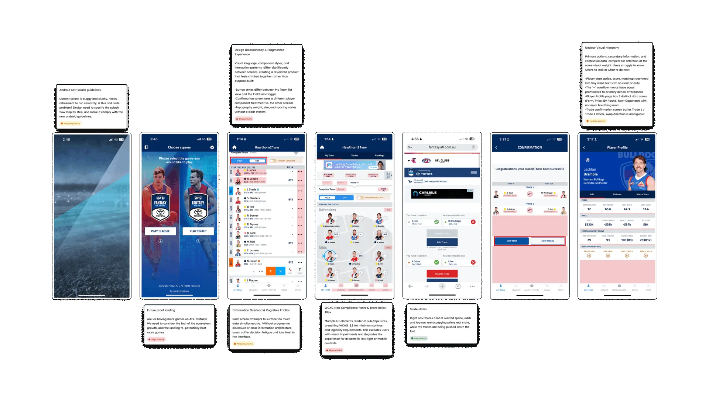
My Role:
I led the end-to-end product design effort, from discovery through to delivery, working in close partnership with the product manager, engineering lead and iOS engineers. My responsibilities covered:
- Researching heuristics, competitors, and user journeys.
- Run a series of interviews with real users, to understand usability patterns
- Auditing the existing product and mapping design debt across all platforms
- Defining the component and pattern strategy
- Producing and iterating the branding rationale
- Conducting user research and usability testing to validate design decisions
- Designing all flows from wireframe through high-fidelity across Web, iOS, and Android
- Building and maintaining the design system in Figma
- Leading design handoff with the engineering team
- Running design and code audits previous and after launching
- Role
- Senior Product Designer
- Timeline
- 2024-2026
- Platforms
- iOS, Android, Web
- Company
- Genius Sports, Telstra
Research & Discovery
Before touching a single screen, I spent time understanding the product from two angles: the user experience and the system underneath.
Design audit I catalogued every component in the product: buttons, cards, navigation patterns, form inputs, data visualisations, and documented every inconsistency. The audit revealed that roughly half of the design patterns in the product were either duplicated, inconsistently applied, or undocumented. That became the benchmark: ~50% design debt to resolve.
User research I ran usability testing sessions with existing AFL Fantasy users, focusing on the three highest-traffic flows: team selection, trade management, and live scoring. Across sessions, three consistent themes emerged:
- Orientation: users frequently lost track of where they were in multi-step flows
- Confidence: users hesitated before confirming trades and selections, unsure of the consequences
- Speed: power users wanted to move faster; the UI was getting in their way
Data review Working with the product manager, I reviewed analytics across the key flows, where users dropped off, which features had low engagement relative to their prominence, and where support tickets were clustering. The scoring and trade flows stood out clearly as areas where user behaviour and design intent had misaligned.
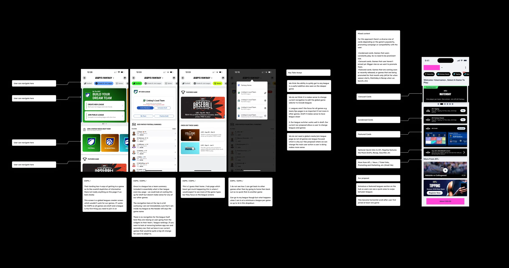
Key Insights:
Three insights shaped everything that followed:
1. The product needed a shared language, not just a visual refresh. The inconsistency wasn't aesthetic, it was structural. A visual refresh would fix how it looked; what we needed was a systematic approach that would fix how it worked, for users and for the team building it.
2. Power users are the product's heartbeat. AFL Fantasy has a core of deeply engaged fans who return every week across a 23-round season. Design decisions that slowed them down, extra taps, confirmation screens, unclear hierarchy, had an outsized impact on retention. Speed and clarity were non-negotiable.
3. Consistency would compound over time. Every hour spent debating component choices in design was an hour not spent on features. By resolving the design language upfront, we were investing in every future sprint, not just this one.
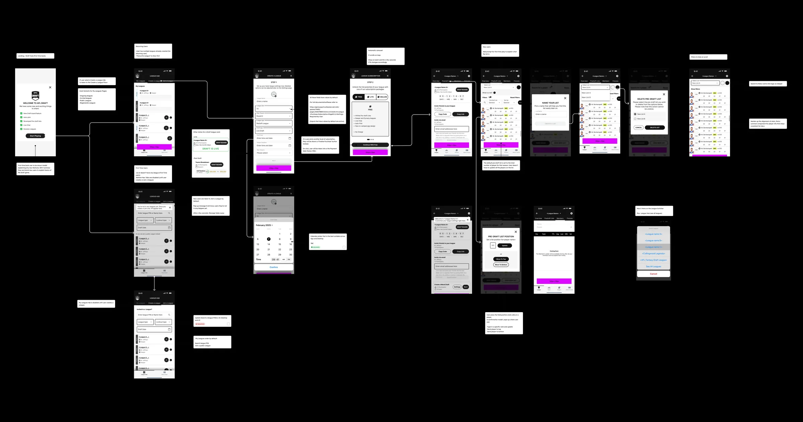
Design Approach
Information Architecture
The first structural decision was to simplify navigation. The existing architecture asked users to make too many choices too early. I consolidated the core flows: My Team, Trades, Scores, Leagues, into a cleaner primary navigation, reducing the cognitive overhead of getting from intent to action.
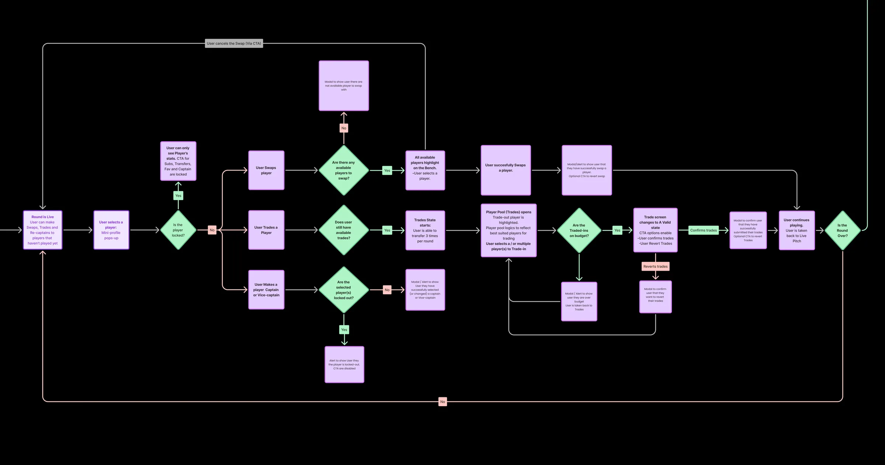
Progressive disclosure
For complex flows like trades, I introduced progressive disclosure: surface the essential information first, reveal detail on demand. This reduced the perceived complexity of the trade flow significantly, while preserving full functionality for users who wanted it.
Responsive-first, mobile-led
Given that the majority of usage happened on mobile during live matches, I designed mobile-first and scaled up, rather than the reverse. This forced earlier decisions about hierarchy and prioritisation that made the desktop experience stronger too.
Interaction patterns
For live scoring in particular, I designed state-based components that communicated change clearly, player score updates, rank movement, trade lock timing, so users understood what was happening without needing to refresh or navigate away. Real-time context, delivered clearly.
Design System
The design system was the project's structural backbone, and the work I'm most proud of.
Starting from the audit findings, I rebuilt the component library in Figma from scratch using atomic design principles:
- Tokens first: colour, typography, spacing, and elevation, rounded corners, shadows, borderlines, defined as variables, ensuring visual decisions were systematic rather than ad hoc
- Component hierarchy: atoms → molecules → organisms, with clear naming conventions that matched the engineering implementation
- Native variants: each component documented for Web, iOS, and Android, with platform-native behaviour explicitly called out
- States and interactions: every component included all states: default, hover, active, disabled, error, loading
The result was a library the engineering team could build from directly, dramatically reducing the back-and-forth during implementation. Dev handoff shifted from "interpret this design" to "implement this component as built", a fundamentally different relationship.
Outcome: ~50-60% reduction in design debt across the product, with a component library that has become the team's single source of truth for all subsequent feature work.
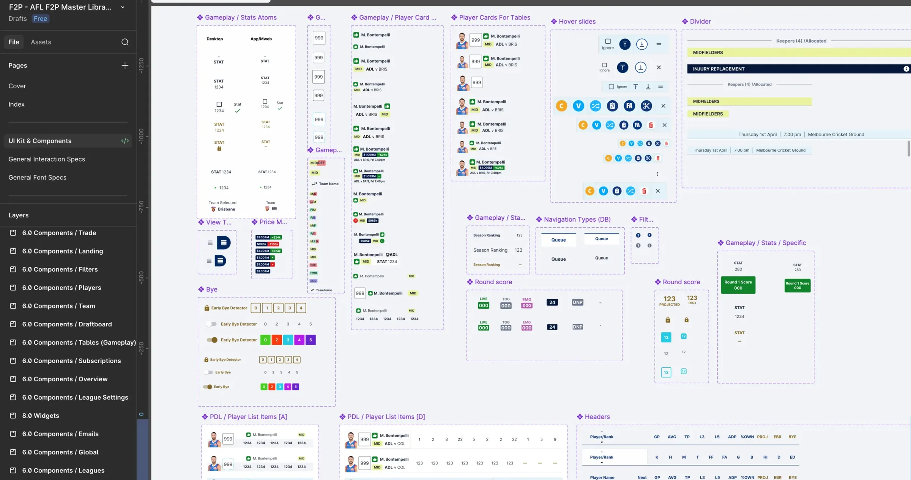
Key Decisions & Rationale
Rebuilding vs. refining Early in the project, there was a conversation about whether to refine the existing components or rebuild from scratch. I advocated for rebuilding, not out of preference for starting over, but because the existing components had accumulated so many exceptions that refining them would have required as much effort as rebuilding, with less clarity at the end. The audit data supported this position.
Shipping iteratively, not all at once Rather than holding the redesign until every flow was finalised, I worked with the product manager to sequence releases, shipping the most-used flows first, gathering real feedback, and refining the system as we went. This kept the product live and learning while the system matured.
Documenting decisions, not just outputs One of the biggest gaps I found was institutional knowledge, why certain design decisions had been made. I started documenting rationale alongside components in Figma, so that future designers (and engineers) could understand the why, not just the what. This paid dividends almost immediately, reducing the number of "why does this work this way?" questions in review.
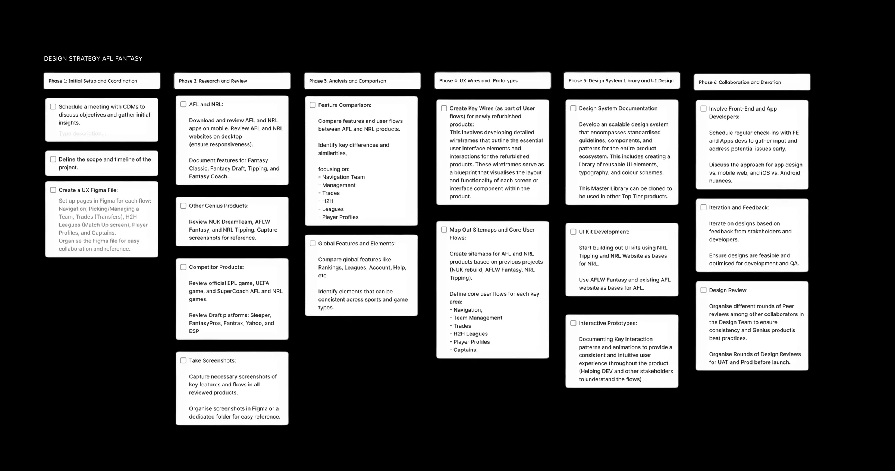
- Categories
- Free to Play | Design Systems | Design Strategy | Product Branding | Gamification
- Users
- 300,000+ active fans
- Design key outcome
- ~50% reduction in design debt. Scalable design system build from scratch
- Engineering outcome
- Increased 30-50% dev handoff speed, well organised documentation.
01
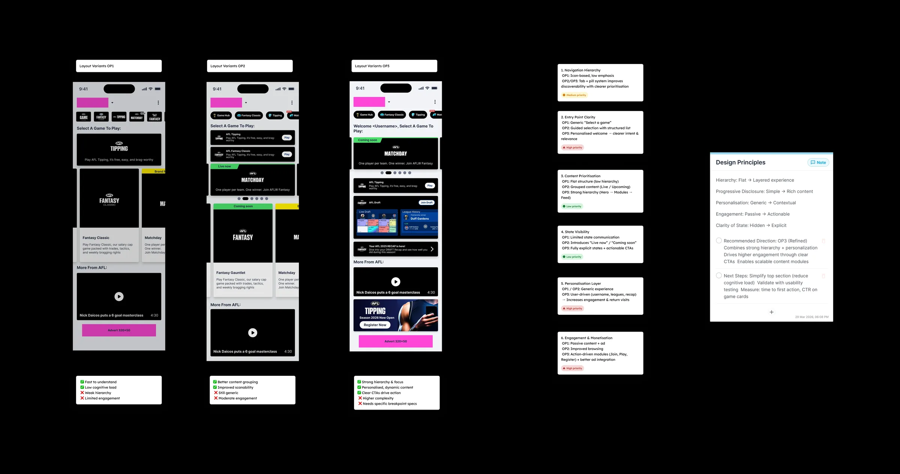
02
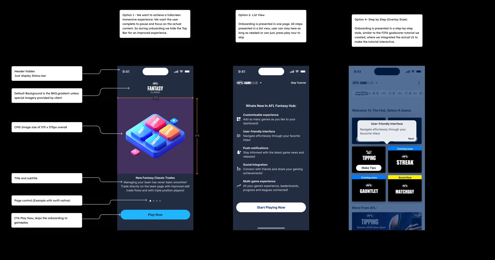
Outcomes & Impact
| Metric | Result |
|---|---|
| Design debt | ~50% reduction across all platforms |
| Users served | 300,000+ active fans |
| Platforms | Web, iOS, and Android, consistent across all three |
| Design system | Built from scratch; became department's single source of truth |
| Dev handoff | Measurably faster iteration cycles post-system launch |
| User feedback | Qualitative improvement in usability testing post-launch |
The redesign shipped ahead of a new AFL season, giving the team a clean foundation to build on. In the seasons that followed, new features were designed and shipped using the system, the compounding benefit of the earlier investment becoming visible with each sprint.
What I Learned
Systems thinking is a product skill, not just a design skill. The biggest impact I had on this project wasn't any single screen, it was the decision to invest in the system underneath. That choice affected every feature that shipped after it, and it shaped how the engineering team thought about their own work.
Constraint clarifies. Designing for a product with a defined, passionate user base forced me to make hard decisions early and defend them clearly. AFL Fantasy fans know the product deeply, they notice when something feels off, and they'll tell you. That accountability made the design work better.
The handoff is part of the design. A design that doesn't survive implementation isn't a good design. The closest collaboration I had on this project was with the engineering lead, and the quality of the final product reflected that. I learned to think about implementation earlier, and to design in a way that made the engineer's job clearer, not harder.
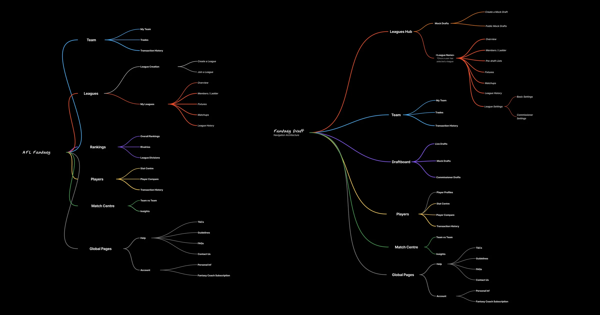
Launch & Delivery
- Pre-Launch (19.12.25): Marketing campaign across AFL channels and social platforms, with early access for selected AFL members
- Launch 1.0 (12.03.26): Web and responsive web release, with ongoing testing and QA
- Launch 2.0 (19.02.26): Mobile app launch on Apple App Store and Google Play
- Post-Launch (26.03.26): Continuous feature rollout driven by user feedback and AFL partnerships
01
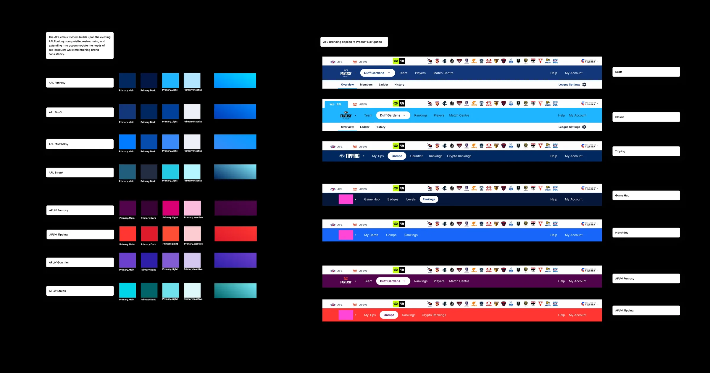
02
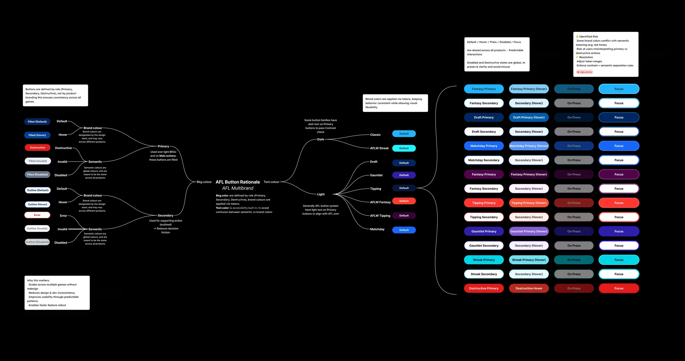
03
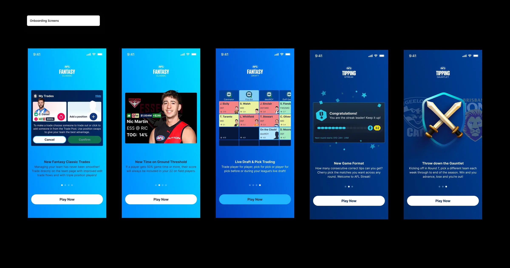
see also
SaaS in progressCeres Gamification
FIFA Play Zone
Let’s Create Together
Reach out anytime